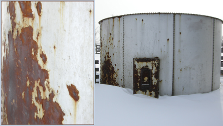

Module 3—Electrochemical Reactions
 Module Summary
Module Summary
In Module 3 you considered the following module questions:
- What properties of metals make them popular choices in the construction and production of materials?
- How can an understanding of corrosion allow for better selection of materials and for development of methods that reduce material damage?
Your study of electrochemical change in Module 3 has prepared you to understand the rationale for many technologies used in products you will purchase. You also now understand the importance of maintaining or improving the methods used to protect metals from conditions in which the metals may react and fail to perform as intended.
Concept Map or Graphic Organizer
As you worked through Module 3, you may have added information to a concept map or graphic organizer based on the module and lesson questions listed in the Module 3 Concept Organizer. Now is a good time to review the relationships in your concept map or graphic organizer and to try to answer the module and lesson questions.
A sample Module 3 concept map shows one set of possible links between the questions. Remember that this is one possible description only—there are many other correct possibilities. However, if your completed concept map or graphic organizer differs significantly from the sample, you may wish to contact your teacher or to compare your map or organizer with those of other students in your class. This will ensure that your interpretations of lesson materials and your descriptions are accurate.
 Module Assessment
Module Assessment
Consider these photographs:

- Describe the electrochemical change that has discoloured the iron used to construct the granary. Your description must mention oxidation numbers and include a relevant half-reaction.
- List technologies that could have been used to prevent this change from occurring. Select one of the technologies you listed, and prepare a detailed description of how this method prevents this type of change.